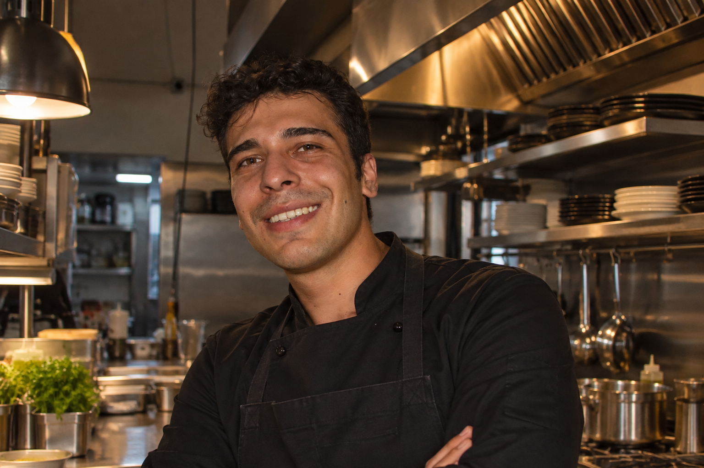

01
Executive Chef
Düven Hotel Cappadocia
Cappadocia · Nevşehir
Mutfak operasyonu, ekip koordinasyonu ve üretim süreçlerinde sorumluluk.

Turizm rehberliğiyle başlayan kariyer yolculuğu, mutfağa duyduğu merakla profesyonel aşçılık alanına yöneldi. Akdeniz Üniversitesi'nde edindiği kültürel birikimi, Isparta Uygulamalı Bilimler Üniversitesi Aşçılık eğitimiyle birleştirdi.
Kapadokya'daki profesyonel mutfak deneyimi boyunca farklı pozisyonlarda görev alarak üretim, servis ve mutfak operasyonlarının farklı aşamalarında deneyim kazandı.
Mutfak operasyonu, ekip koordinasyonu ve üretim süreçlerinde sorumluluk.
Profesyonel mutfak üretimi ve servis süreçlerinde aktif görev.
Mutfak istasyonu, hazırlık, üretim ve servis süreçlerinde profesyonel deneyim.
Elika Cave Suites Hilton Hotel mutfağında birlikte çalıştığım Executive Chef'ler.
Referans iletişim bilgileri talep halinde paylaşılır. Bana ulaşın.
Profesyonel mutfak deneyimi, özel menü çalışmaları veya iş birlikleri için iletişime geçebilirsiniz.
İletişime Geç →